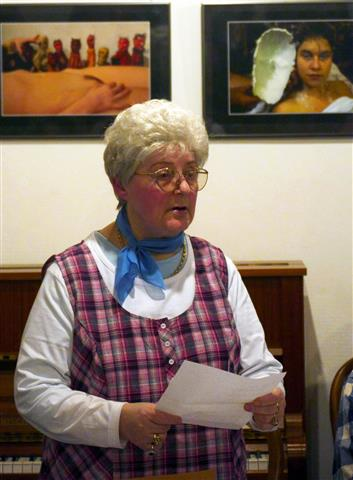

Hildburghausen/Veilsdorf. Am 17. Mai verstarb in Hildburghausen die Autorin Erika Westhäuser. Sie wurde als phantasievolle Märchendichterin und Erzählerin mitreißender Geschichten aus ihrer Kindheit und Jugend an der Werra bekannt. Ebenso begeisterte sie mit ihren immer lebhaft und überzeugend vorgetragenen Gedichten und Schwänken in Südthüringer Mundart – auch wenn es die im eigentlichen Sinne gar nicht gibt, denn an der Werra um Eisfeld wird fränkisch gebabbelt. Diese wunderbare farbenfroh-kräftige Sprache beherrschte Erika Westhäuser in vielen Facetten und bereicherte damit häufig Lesungen des Südthüringer Literaturvereins, dem sie seit dessen Gründung 1990 angehörte.
Ursprünglich im Schreibkurs von Karl-Heinz May – damals „Zirkel schreibender Arbeiter" genannt – am Zeiss-Werk Eisfeld zu Hause, fand die 1938 aus Ließau bei Danzig nach Südthüringen gekommene Erika Westhäuser, geb. Nititzki, über das Schreiben in beeindruckender Weise zur Verwirklichung ihrer Ideale. Viele Jahre als Erzieherin tätig und schon als Jugendliche mit dem Verfassen eigener Texte befasst, blieb sie nach dem Ruhestandseintritt 1991 dieser Tätigkeit treu. Einige ihrer sieben allesamt nach 1990 veröffentlichten Bücher ergänzte sie mit eigenen Illustrationen. Ihre Lesungen waren legendär und fanden stets begeisterte Zuhörer. Hochbetagt und des Internets unkundig kam sie in den eingeschränktesten Corona-Zeiten auf die Idee, Freunde und Bekannte anzurufen und ihnen per Telefon eigene Literatur vorzutragen, um auf diese Weise auch in Stillstandszeiten Kultur zu bewahren und zu vermitteln.
Der Südthüringer Literaturverein trauert um eine seiner bekanntesten und beliebtesten Autorinnen, die eine ganz besondere, leichte Note in dessen Arbeit einbrachte und mit ihrem Wirken und ihren Texten Mitstreitern wie Zuschauern ein Lächeln ins Gesicht zauberte. Die Jahre mit ihr werden unvergessen bleiben.
